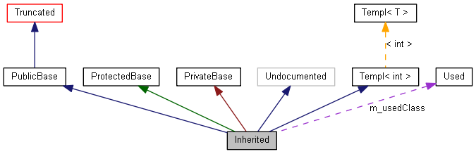

이 페이지는 doxygen에 의해 생성된 그래프들을 이해하는 방법을 설명합니다.
다음의 예제를 참고하십시오.:
class Invisible { };
class Truncated : public Invisible { };
class Undocumented { };
class PublicBase : public Truncated { };
template<class T> class Templ { };
class ProtectedBase { };
class PrivateBase { };
class Used { };
class Inherited : public PublicBase,
protected ProtectedBase,
private PrivateBase,
public Undocumented,
public Templ<int>
{
private:
Used *m_usedClass;
};
다음과 같은 그래프가 출력될 것입니다. :

위 그래프의 박스들은 다음과 같은 의미를 가집니다. :
-
A 회색으로 채워진 박스는 이 그래프를 생성해 낸 구조체나 클래스를 의미합니다.
-
A 검은색 테두리의 박스는 문서화된 구조체나 클래스를 의미합니다.
-
A 회색 테두리의 박스는 문서화되지 않은 구조체나 클래스를 의미합니다.
-
A 빨간색 테두리의 박스는 모든 상속이나 포함관계가 보여지지 않는 구조체나 클래스를 의미합니다.A 만약 그래프가 지정된 경계내에 맞지 않으면, 그래프가 잘려집니다.
화살표들은 다음과 같은 의미를 가집니다. :
-
A 어두운 파랑색 화살표는 두 클래스들 간에 public 상속이 있음을 의미합니다.
-
A 어두운 연두색 화살표는 protected 상속이 있음을 의미합니다.
-
A 어두운 빨간색 화살표는 private 상속이 있음을 의미합니다.
-
A 보라색 점선 화살표는 다른 클래스에 의해 포함되거나 사용되어짐을 의미합니다. 화살표의 라벨은 화살표가 가리키는 클래스나 구조체로 접근하는 변수명(들)으로 붙습니다.
-
A 노란색 점선 화살표는 템플릿 인스턴스와 템프릿 클래스에 대한 관계를 의미합니다. 화살표의 라벨은 인스턴스의 템플릿 파라메터로 붙습니다.